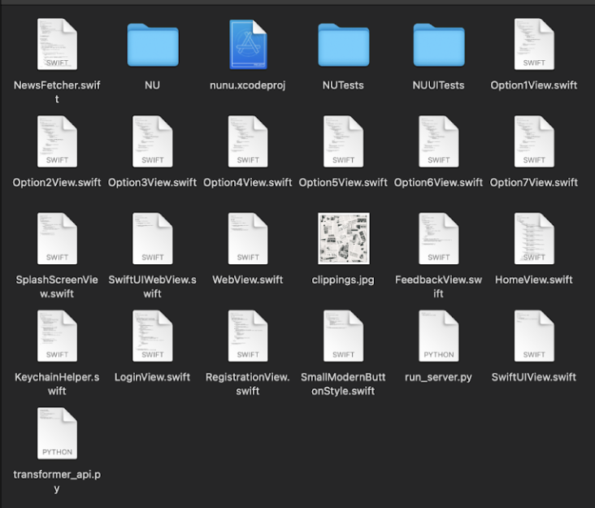

Problem Statement
Nobody wants their mood ruined by seeing news they didn't want to see. The purpose of nunu is to tailor news segments to the emotion of the user. The goal is to help users see the information they truly want to see and filter news stories simply, weeding out unintended, uninteresting stories.
Visuals and Descriptions
